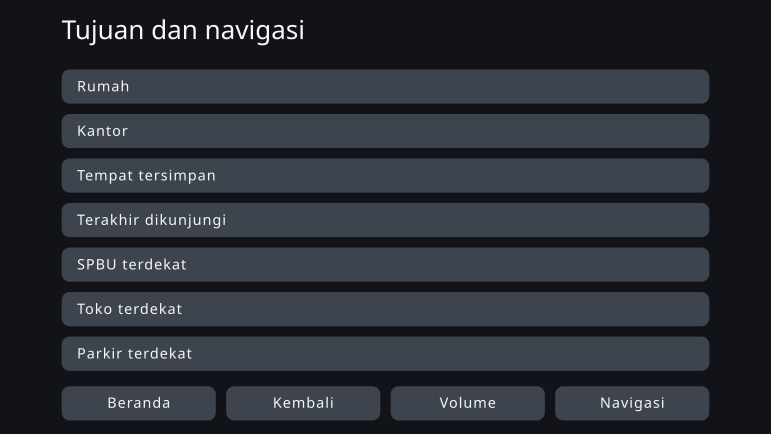
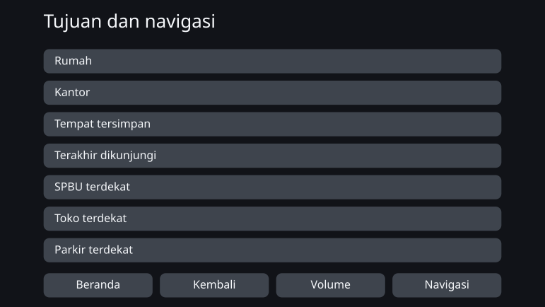
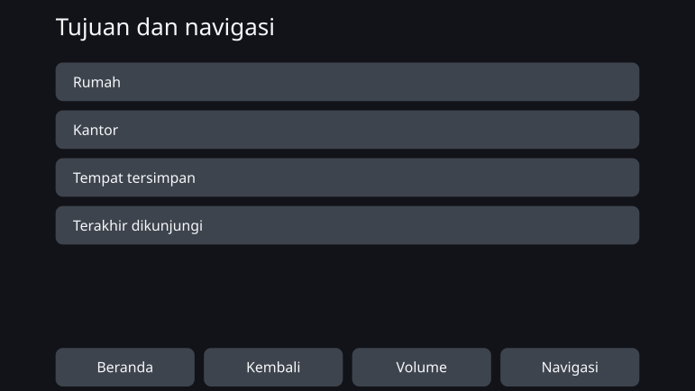

Personal Fit UI - Optimalisasi Individu UI dengan Desain Berbasis Batasan
oleh Takafumi Horiuchi
Agustus 2026
Ikhtisar
Semua orang memakai satu antarmuka yang sama dengan cara yang sama. Karya ini meninggalkan premis produksi massal itu dan menelaah apakah antarmuka justru dapat dibangkitkan agar pas dengan karakteristik kognitif, indrawi, dan fisik tiap orang.
Yang dituju bukan antarmuka yang layarnya terus berubah mengikuti situasi selama dipakai, melainkan sebuah mekanisme yang menangkap karakteristik seseorang pada saat ia mulai memakai produk, lalu membangkitkan lebih dahulu antarmuka yang cocok baginya, sambil mematuhi batasan keselamatan dan aksesibilitas.
Dalam penelaahan ini saya mempraktikkan gagasan yang saya sebut desain berbasis batasan. Berbekal literatur dan standar, manusia merancang arah yang boleh ditempuh dan garis batas yang tidak boleh dilewati. Di dalam kerangka itu AI menetapkan nilai dan pilihan kata yang konkret, lalu hasilnya diperiksa apakah melanggar kerangka atau tidak.
Bukti konsep ini mengambil sistem navigasi mobil sebagai bahan dan membangkitkan antarmuka untuk tiga belas persona dengan karakteristik yang berbeda-beda. Hasilnya, hampir tidak ada perubahan tampilan yang mencolok. Sebaliknya, proses menuliskan batasan dalam bentuk yang dapat diperiksa justru memperlihatkan di mana ruang untuk individualisasi masih tersisa dan di mana ia habis dimakan batasan.
Apa artinya menyerahkan satu antarmuka kepada semua orang
Sebagian besar produk saat ini dirancang dengan asumsi produksi massal: satu antarmuka untuk menjangkau sebanyak mungkin orang. Bahkan pada produk yang ukuran hurufnya atau jumlah butir tampilannya bisa diubah, penggunalah yang harus menemukan sendiri keadaan yang cocok dan mengaturnya.
Cara ini berhasil untuk banyak orang. Tetapi cocok untuk banyak orang tidak sama dengan cocok untuk semua orang. Produk yang memenuhi seluruh standar perancangan bersama pun tetap menyisakan orang yang kesulitan memakai antarmukanya.
Struktur yang sama tampak pula dalam penilaian antarmuka kendaraan. Prosedur penerimaan NHTSA Amerika Serikat mengenai pengalihan pandangan saat berkendara tidak menuntut semua peserta memenuhi kriteria. Sebuah tugas dinyatakan lulus bila 21 dari 24 peserta memenuhinya, jadi kenyataan bahwa sebagian orang tidak memenuhinya sudah diperhitungkan sejak awal di dalam prosedur itu. Sebuah dokumen yang diserahkan pabrikan mobil kepada regulator melangkah lebih jauh: sekitar satu dari enam orang secara konsisten mengalihkan pandangan lebih lama pada beberapa tugas sekaligus. Dokumen itu berasal dari pabrikan yang justru menjadi objek pengaturan dan mengusulkan pelonggaran kriteria. Yang diusulkan di sini bukan melonggarkan kriteria, melainkan menambah jumlah orang yang mampu memenuhinya melalui individualisasi.
Arti penting antarmuka yang diindividualkan bukanlah membuat layar semua orang menjadi serba baru, melainkan membawa orang yang selama ini tercecer oleh antarmuka seragam ke dalam jangkauan tempat mereka dapat memakainya dan mengoperasikannya dengan aman.
Selama ini biaya merancang satu antarmuka untuk satu orang tidak realistis. Sejak AI dapat diperlakukan sebagai bagian dari proses perancangan, premis itu mulai berubah.
Navigasi mobil sebagai bahan
Pokok karya ini bukan navigasi mobil, melainkan antarmuka yang diindividualkan. Navigasi mobil dipilih sebagai satu contoh untuk menguji kemungkinan sekaligus batasnya.
Antarmuka kendaraan memikul batasan yang keras: layar yang terbatas, waktu pandang yang sangat singkat, dan keselamatan setiap pengoperasian. Sebelum dilepas ke pasar ia divalidasi sebagai antarmuka seragam yang bisa dipakai kebanyakan orang, dan antarmuka yang sama itu pula yang diserahkan kepada orang-orang yang tidak cocok dengan rancangan tersebut.
Jika individualisasi tetap berdiri di ranah yang batasannya seketat itu, gagasan desain berbasis batasan dapat diuji secara konkret. Sebaliknya, ada kemungkinan batasan tersebut nyaris tidak menyisakan kebebasan bagi AI. Bahan ini memungkinkan keduanya diamati.
Di Jepang, pada 2026, mobil yang mendukung pembaruan lewat udara dan perangkat navigasi bawaan pabrik model lama yang tidak mendukung pembaruan sama-sama beredar. Selain itu, meski data peta dapat diperbarui, struktur dasar antarmukanya belum tentu dirancang ulang terus-menerus setelah pembelian. Bukti konsep ini mengandaikan sistem yang antarmukanya tidak sering diperbarui setelah mulai dipakai.
Menjadikan individualisasi sesuatu yang dapat dibangkitkan
Desain berbasis batasan berarti menetapkan kerangkanya dengan jelas, lalu membiarkan AI bergerak luwes di dalamnya sambil menangkap nuansa. Berbeda dengan mekanisme parametrik yang mengambil nilai dari tabel yang sudah ditetapkan, yang dirancang di sini adalah rentang solusi yang boleh ditelusuri AI itu sendiri.
Pengetahuan ilmiah tidak selalu sampai pada angka yang konkret. Kadang ia hanya menunjukkan arah: perbesar, kurangi yang ditampilkan. Bagian yang nilainya sudah pasti dihitung sebagai aturan; bagian yang hanya diketahui arahnya diserahkan kepada AI untuk ditetapkan secara konkret dalam batas yang diizinkan. Menjaga agar pembedaan itu tidak kabur juga merupakan bagian dari mekanismenya.
Menetapkan dimensi kognitif
Sumbu didefinisikan bukan sebagai nama diagnosis, melainkan sebagai karakteristik yang berkaitan dengan kemudahan pemakaian: memori kerja, ketahanan terhadap gangguan, karakteristik penglihatan dan pendengaran, serta kecekatan jari.
Tabel pemetaan
Menghubungkan karakteristik pengguna dengan parameter antarmuka yang harus digeser: karakteristik mana menggeser apa, ke arah mana, dan atas dasar apa.
Bukti ilmiah dan standar
Mengumpulkan kriteria keselamatan, standar aksesibilitas, temuan ilmu kognitif, dan prinsip umum perancangan antarmuka.
Himpunan batasan
Syarat yang wajib dipatuhi setiap hasil bangkitan. Tidak berhenti sebagai gagasan, melainkan ditulis dalam bentuk yang memungkinkan diperiksa: terpenuhi atau dilanggar.
Ruang rancangan
Segala pilihan yang mungkin diambil antarmuka: ukuran huruf, sasaran sentuh, jumlah butir yang ditampilkan, hierarki informasi, pemberitahuan, pilihan kata, urutan, pengelompokan. Tabel pemetaan memberi arah penyetelan, himpunan batasan menyingkirkan solusi yang tidak diizinkan.
AI mewujudkan yang konkret di dalam kerangka
Dari kebebasan yang tersisa, ia menetapkan nilai, pilihan kata, urutan, dan pengelompokan. Pemeriksaan terpisah memastikan kecocokannya dengan kerangka, dan hanya antarmuka terindividualkan yang memenuhi semua syarat yang dikeluarkan.
Bukti konsep: membangkitkan antarmuka untuk tiga belas persona
Bukti konsep ini menyiapkan tiga belas persona dengan kombinasi karakteristik yang berbeda-beda. Persona itu bukan tiruan sebaran pengguna yang nyata, melainkan titik-titik kisi untuk pengujian, dengan karakteristik yang sengaja ditempatkan agar terlihat karakteristik mana yang mengubah antarmuka.
Untuk tiap persona, antarmuka seragam yang sama dijadikan before, dan antarmuka yang dibangkitkan dari karakteristiknya dijadikan after.
Contoh yang hampir tidak berubah
PS-01 — acuan (usia paruh baya, khas)
Persona ini berada pada rentang khas untuk seluruh karakteristik kognitif, indrawi, dan fisiknya. Setelah individualisasi, hurufnya sedikit membesar, tetapi jumlah butir yang ditampilkan, tata letaknya, dan ukuran area sentuhnya nyaris tidak berubah.
Antarmuka seragam (before)

Antarmuka terindividualkan (after)

Contoh yang perubahannya terlihat
PS-12 — paruh baya, kecekatan jari rendah (indrawi dan kognitif khas)
Persona ini sama dengan PS-01 dalam usia serta karakteristik indrawi dan kognitif; hanya kecekatan jarinya yang rendah. Pada after, sasaran sentuh membesar dan butir yang tampil dalam satu layar turun dari tujuh menjadi empat. Sisanya dipindahkan ke layar berikutnya, dan justru itulah yang mengamankan ukuran tiap sasaran.
Antarmuka seragam (before)

Antarmuka terindividualkan (after)

Literatur menunjukkan batas bawah yang harus dipenuhi sasaran sentuh dan arah pembesarannya ketika ketelitian pengoperasian rendah, tetapi tidak menetapkan secara tunggal berapa banyak tambahannya untuk orang tertentu ini. Bagian yang belum pasti itulah yang diwujudkan AI dalam rentang yang diizinkan batasan.
Hasil bukti konsep
Perubahan yang jelas terlihat hanya terpastikan pada PS-12, satu dari tiga belas. Pada sebagian besar persona, antarmuka seragam di before sudah cukup berfungsi; manfaat individualisasi nyaris tidak muncul, setidaknya dalam bentuk yang dapat dikenali dari tampilan layar.
Pada PS-12 individualisasi memang dapat ditunjukkan secara kasatmata, tetapi perubahan sebesar itu masih dapat dicapai lewat pengaturan tampilan atau aksesibilitas pada produk yang sudah ada. Menyediakan keadaan yang pas sejak awal, tanpa pengguna harus mengaturnya sendiri, tetap bermakna. Namun belum bisa dikatakan bahwa lahir antarmuka baru yang hanya bisa diusulkan AI.
Saya tidak menyimpulkan hasil ini sebagai keberhasilan individualisasi oleh AI.
Mengapa perbedaan itu tidak muncul
Sebabnya adalah ruang rancangan yang memenuhi batasan itu sempit.
Antarmuka kendaraan memiliki banyak sekali batas bawah dan batas atas demi keselamatan. Huruf dan sasaran sentuh memerlukan ukuran minimum tertentu, dan jumlah informasi yang bisa ditampilkan dalam satu layar memiliki batas atas. Ketika semuanya diterapkan satu per satu, solusi yang bisa dipilih AI tinggal sedikit sekali.
Sebagian besar butir yang diwujudkan AI pun, pada skala kali ini, masih termasuk hal yang cukup diputuskan manusia sekali lalu dipatok sebagai tabel padanan kecil. Ini bukan berarti AI tidak diperlukan — ia mengisi nilai konkret yang tidak disebutkan literatur. Hanya saja pilihan yang tersisa terlalu sedikit untuk ditelusuri.
Sebaliknya, pada penggantian pilihan kata masih tersisa kebebasan yang luas. Namun perbedaan itu sukar terlihat sebagai perubahan susunan layar: ranah yang nilainya dapat dikenali manusia dan ranah yang tidak habis ditulis sebagai aturan ternyata tidak bertumpang tindih.
Hasilnya muncul pada rancangan kerangka, bukan pada antarmuka
Hasil terbesar bukti konsep ini lahir bukan pada tahap membangkitkan antarmuka, melainkan sebelumnya, pada tahap merancang batasan. Dalam proses menuliskan standar dan literatur sebagai syarat yang dapat diperiksa mesin, ditemukan beberapa ketidakselarasan pada kerangkanya sendiri.
- Standar yang berbeda memberi batas bawah yang berbeda untuk elemen antarmuka yang sama.
- Syarat “hanya berlaku saat kendaraan berjalan” tidak punya tempat untuk dituliskan di dalam spesifikasi.
- Dua sumbu perancangan yang sebenarnya saling bebas digabungkan menjadi satu, sehingga hampir semua pilihan tersingkir oleh batasan.
- AI tidak diberi tahu dengan cukup jelas batasan mana yang mengatur keluaran mana, sehingga syarat yang tidak berkaitan ikut dipakai dalam penilaian.
- Penilaian yang seharusnya disisakan untuk AI justru dipatok di sisi implementasi, sehingga desain berbasis batasan mendekat menjadi sekadar mesin aturan.
Untuk tiap temuan itu, AI mendeteksi ketidakselarasannya dan menunjuk bagian yang bersangkutan, manusia memutuskan, lalu batasannya diperbaiki.
Dengan kata lain, hasil kali ini terletak bukan pada AI membuat antarmuka baru, melainkan pada kerangka yang melahirkan antarmuka itu sendiri yang teruji dan diperbarui lewat bolak-balik dengan AI. Peran AI dalam desain berbasis batasan bukan hanya membangkitkan produk jadi, melainkan juga menemukan, sebelum apa pun dibangkitkan, di mana aturan saling bertabrakan dan kemungkinan rancangan mana yang terhapus tanpa disengaja.
Pekerjaan lanjutan — kerangka yang tegas, ruang yang lapang di dalamnya
Yang diharapkan dari AI dalam desain berbasis batasan bukanlah mengambil nilai yang sudah ditetapkan dari sebuah tabel. Melainkan menyingkirkan lebih dulu hasil yang jelas tidak pantas lewat batasan, lalu dari sekian banyak kemungkinan yang tersisa mengajukan solusi yang secara peluang paling masuk akal, atau menunjukkan pola yang tidak terpikirkan manusia sebelumnya.
Kali ini efek tersebut belum cukup muncul. Bukan karena tidak ada benturan, melainkan karena ruang rancangan yang memenuhi batasan itu sempit, sehingga memilih solusi yang lebih cocok atau solusi yang baru hampir kehilangan maknanya.
Pertanyaan berikutnya bukanlah apakah AI berguna, melainkan: seluas apa ruang rancangan yang diperlukan agar efek khas AI itu muncul?
Pada praktik berikutnya saya akan memilih bahan yang keselamatannya tetap terjaga, tetapi menyisakan beberapa solusi yang sama-sama masuk akal, dan perbedaannya yang tak habis ditulis sebagai aturan pun dapat dikenali manusia sebagai nilai. Kerangkanya ditetapkan dengan tegas, tetapi di dalamnya disisakan keluasan yang cukup untuk ditelusuri AI. Memenuhi keduanya sekaligus itulah yang menjadikan desain berbasis batasan bukan sekadar otomatisasi, melainkan sebuah metode desain untuk zaman AI.